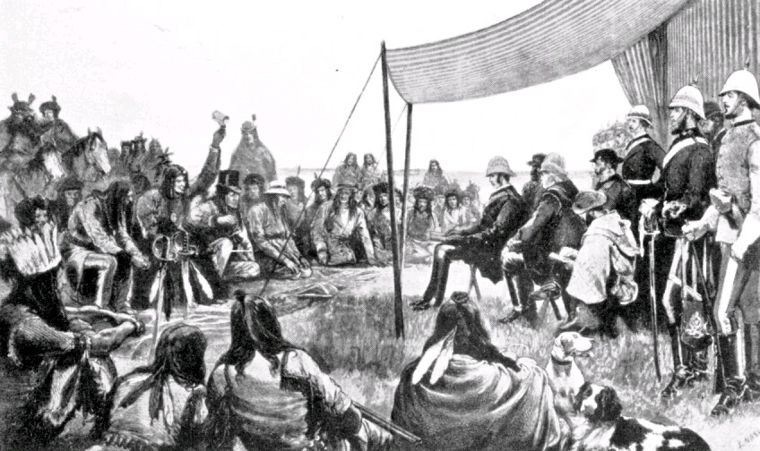
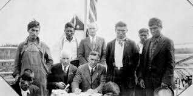
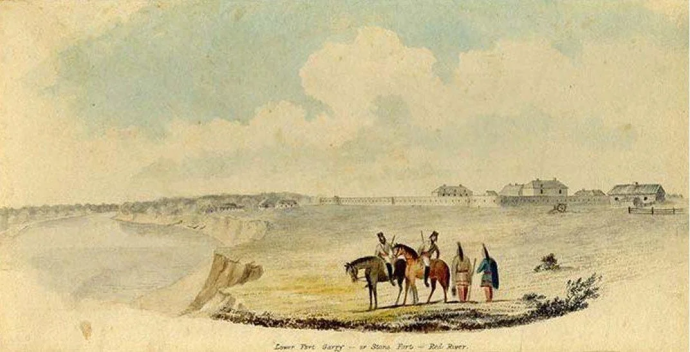

The History of Treaty 1
Treaty 1, also known as the "Southern Manitoba Treaty," was signed on July 23, 1871, between the Anishinaabe and the British Crown. This treaty was the first agreement made between the Indigenous peoples of Canada and the Crown, and it set the stage for future treaties in the Canada.


The treaty was signed at Lower Fort Garry, located near present-day Winnipeg, Manitoba. The Anishinaabe people, represented by their leaders, agreed to cede their land to the Crown in exchange for certain rights and benefits, including the right to hunt and fish on their traditional territories.
The signing of Treaty 1 marked a significant moment in Canadian history, as it established a framework for the relationship between Indigenous peoples and the Canadian government. However, the treaty has also been the subject of much debate and controversy, as many Indigenous leaders argue that the terms of the agreement were not fully honored by the Crown.
